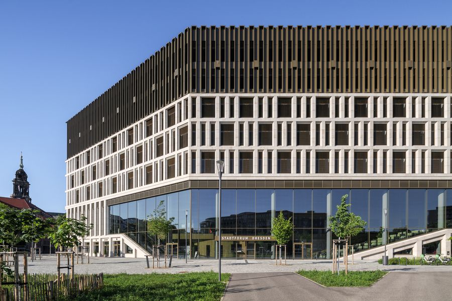
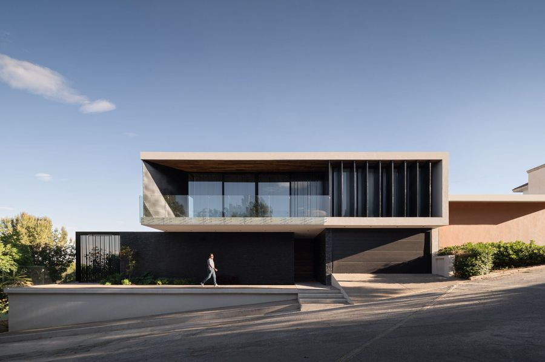
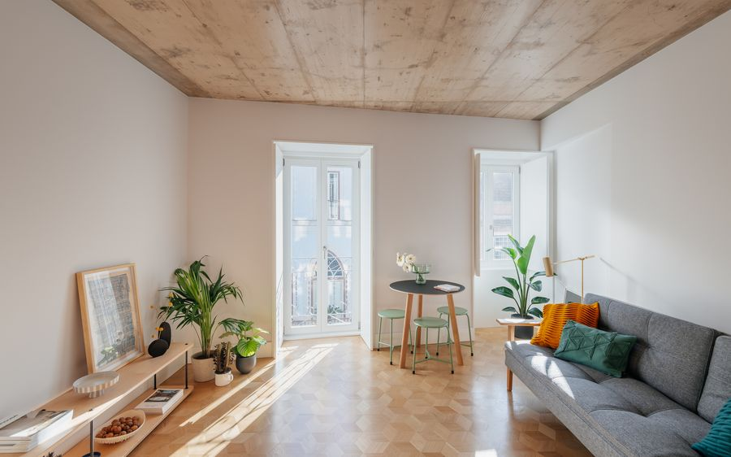

Our profile types in architecture
Every project below pairs a real building with the Gi Village product line that solves its facade challenge — from leak-proof sill boards to see-through glass railings. Source: ArchDaily.
 Residential · Apartments
Residential · Apartments
The Martin Residential Building / OMA
OMA's Amsterdam residential quarter wraps every apartment in continuous balconies with transparent glass balustrades. This is exactly what our HL Glass Railing delivers: a slim stanchion and armrest system that keeps the view open, meets balcony safety codes, and stays corrosion-free for decades thanks to the TIGER powder-coated finish.
- Unobstructed views
- Minimal frame look
- Weather-resistant TIGER finish
 Research Campus
Research Campus
Tianfu Fusion Technology Research Center / CSWADI
A landmark science campus whose precision facade is defined by sharp window reveals. Our WCT Exterior Window Casing creates that same crisp frame around every opening, while its adhesive + mortar fixing over styrene foam seals the surround against water ingress — the clean, leak-proof edge a research-grade facade demands.
- Crisp architectural lines
- Leak-proof surround
- 6063-T5 durability

Public · OfficeStadtforum in Dresden / Barcode Architects + Tchoban Voss
Dresden's heritage-meets-new-build office quarter relies on clean roof and parapet finishes. Our YD Wall Coping is built for exactly that job: a 6063-T5 aluminum cap with an integrated drip detail that sheds water before it can streak the facade, protecting parapets and roof edges with a maintenance-free architectural line.
- Parapet protection
- Integrated drip line
- Low-maintenance cap
 Hotel
Hotel
Hotel Fasano Itaim / aflalo/gasperini arquitetos
A study in restrained luxury, Fasano Itaim frames its arrival with slim, frameless canopies. Our MC Minimalist Canopy is the same language: an ultra-slim 10–12 mm profile with an inlaid light groove for a floating glow, capable of 1200 mm overhang and 5000 mm continuous runs — the quiet gesture that defines a five-star entrance.
- Ultra-slim silhouette
- Hidden light groove
- 1200 mm overhang

Private HouseLomas B06 House / Taller Hábitat Arquitectos
Lomas B06's sharp horizontal window reveals are exactly what our CTB Exterior Window Sill Board is designed to produce: a system panel with end fittings and joint trims that stops every sill from leaking, sheds water cleanly, and never needs repainting — keeping the architect's line crisp for the life of the house.
- Leak-proof sill system
- Strong horizontal line
- No painting, ever

Residential · RenovationBelavista à Lapa 76 Building / ALA.rquitectos
A Lisbon apartment renovation where light and clean reveals matter most. Inside, our NCT Interior Window Casing upgrades every opening in a day: an extremely narrow 100–150 mm profile that finishes the reveal against plaster, tile or paint — a fast, low-mess way to modernize existing windows without touching the facade.
- Rapid renovation upgrade
- Ultra-narrow profile
- Wall tile & paint ready
Reference projects are published by ArchDaily and shown here to illustrate product applications. They are not Gi Village installations. For our own project references and samples, contact our sales team.